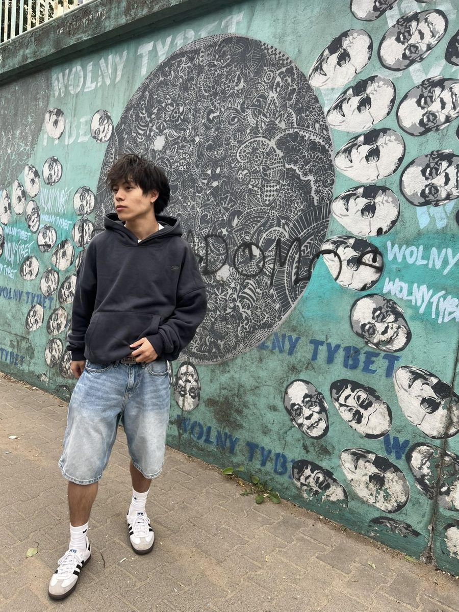

01
I can make kimchi.
The recipe stays in the family.

I’m fascinated by the intersection of design, technology, and human behavior, and how they come together to create products that make people’s lives better. I enjoy understanding people, turning ideas into reality, and figuring out how to make things work better.
I’m especially drawn to Product Management and UX/UI Design, where I can combine creative problem-solving, user empathy, and hands-on building.
Learn more about me below!
Explore my skills & process
Design & research
Interviews, surveys and synthesis that turn real behavior into clear insight.
A few things you won’t find on my résumé
01
The recipe stays in the family.
02
03
04
05
When I’m off the clock, you’ll probably find me somewhere in the mountains snowboarding with music blasting in the winter, spending money on new clothes I definitely don’t need in the spring, or cheering on the Knicks and Timberwolves during basketball season. Come summer, I’m usually off exploring somewhere new in the world. No matter the season, I’m always on the lookout for new artists and music to get into.
Basically, if I’m not building something, I’m probably spending money, watching or playing basketball, listening to music, or figuring out where to go next.
Explore my world of music and travelling.
Suggestion box
Send over a song, album, or artist and I’ll check them out!
Recently played
Collection ·
Playlist ·
Collection ·